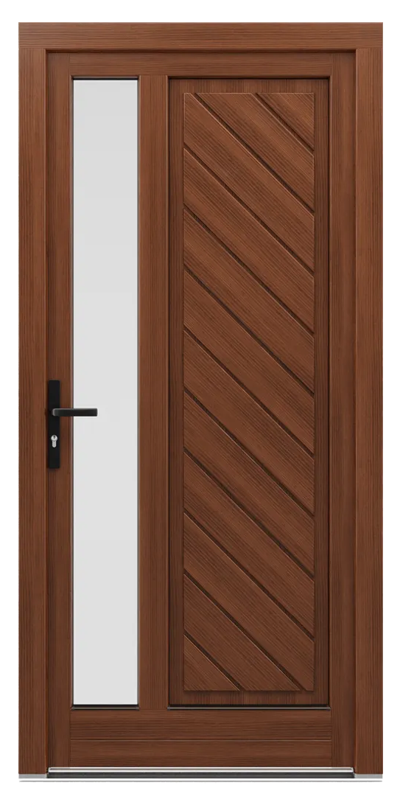

Holztüren
Beispielhaft für unser Holz-Türen-Sortiment stellen wir Ihnen hier das SOFTLINE 88 System von Drutex vor – die massivste und dämmstärkste Ausführung der Serie. Je nach Anforderung und Budget bieten wir Ihnen darüber hinaus weitere Systeme aus dem Drutex-Programm an.
Warme, natürliche Optik, massive Bauweise
Drei- bis vierfach verklebtes Massivholz aus Kiefer, Meranti oder Lärche mit 88 mm Profiltiefe. Ein Wetterschenkel – auch als Holz-Retro-Variante erhältlich – schützt zusätzlich vor Feuchtigkeit, während zwei EPDM-Dichtungen zuverlässig vor Zugluft schützen.
- Uw-Wertbis 0,8 W/(m²K)
- HolzartenKiefer, Meranti oder Lärche
- Profiltiefe88 mm
- SicherheitMACO Multi-Matic KS, optional RC2

Das steckt serienmäßig im SOFTLINE 88 System
Auf Basis der offiziellen Drutex-Produktdaten die wichtigsten Ausstattungsmerkmale im Überblick.
Drei- bis vierfach verklebt, 88 mm Profiltiefe für hohe Formstabilität.
Auch als Holz-Retro-Variante erhältlich, zusätzlicher Schutz vor Feuchtigkeit.
Zuverlässiger Schutz vor Zugluft und Feuchtigkeit.
Sicherheits-Schließbleche serienmäßig, optional aufrüstbar bis RC2.
Ornamentglas, Wärmedämmglas oder einbruchhemmendes Sicherheitsglas.
Mit Grundierung und Imprägnierung schützt das Holz vor Schädlingen und Pilzbefall.
Die BAFA fördert im Rahmen der Bundesförderung für effiziente Gebäude (BEG) Haustüren mit einem Ud-Wert bis maximal 1,3 W/(m²K) – bei zusätzlicher RC2-Sicherheitsausstattung verschärft sich die Anforderung auf 1,1 W/(m²K). Das SOFTLINE 88 System erreicht als Fenster-/Balkontür-Variante bereits einen Uw-Wert von 0,8 W/(m²K) und zeigt damit die hohe Dämmleistung der massiven Holzbauweise. Wir prüfen für Sie gerne unverbindlich, ob Ihre konkrete Türkonfiguration die Förderkriterien erfüllt – mehr dazu auf unserer Förderung-Seite.
Weitere Systeme auf Anfrage
SOFTLINE 88 ist nur ein Beispiel aus dem Drutex-Programm. Je nach Anspruch und Budget realisieren wir für Sie auch:
Bewährte Zwischenlösung mit sehr guten Dämmwerten, Uw bis 0,84 W/(m²K).
Schlankere Profiltiefe für einen attraktiven Einstiegspreis, Uw bis 0,9 W/(m²K).
Für ein kleineres Budget bei guter Dämmleistung – siehe PVC Türen.
Für eine besonders schlanke, moderne Optik – siehe Aluminiumtüren.
Was Sie über SOFTLINE-Holztüren wissen sollten
Ja, serienmäßig mit einer Aluminiumschwelle mit thermischer Trennung, die sich positiv auf die Dämmwerte des gesamten Systems auswirkt.
Aus dreischichtig verbundenem, hochwertigem Holz – Grundlage für klassisches Design, hohe Haltbarkeit und Stabilität.
Für elegantes Design, raffinierte Optik und hervorragende Isolierung.
Ja, u. a. als SOFTLINE-Falttür und als SOFTLINE-Hebeschiebetür für großflächige Terrassenöffnungen.
Angebot für Ihre Holztür anfragen
Ob Einzeltür oder mehrere Einheiten in einem Mehrfamilienhaus – wir beraten Sie unverbindlich zum SOFTLINE 88 System.
Angebot anfragen